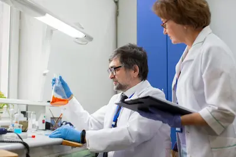

Los últimos avances en nutrición deportiva: ¿Qué dice la ciencia?
Suplementación basada en evidencia: Más allá de las proteínas
La ciencia ha demostrado que ciertos suplementos, como los nitratos derivados del jugo de remolacha, pueden mejorar el rendimiento en ejercicios de alta intensidad al aumentar la eficiencia mitocondrial y reducir el consumo de oxígeno durante el esfuerzo. Estudios recientes (2023) revelan que dosis de 400-600 mg de nitratos, consumidos 2-3 horas antes del entrenamiento, incrementan la resistencia en atletas hasta en un 15%. Por otro lado, la creatina monohidratada sigue siendo el suplemento más respaldado para ganar fuerza y masa muscular, con nuevos protocolos que sugieren una fase de carga de 20 g/día durante 5 días, seguida de 3-5 g/día para mantenimiento, optimizando así la saturación celular sin sobrecargar los riñones.
Sin embargo, no todos los suplementos prometedores cumplen con las expectativas. El HMB (hidroximetilbutirato), por ejemplo, ha mostrado resultados inconsistentes en meta-análisis de 2024, con beneficios significativos solo en personas sedentarias que inician entrenamiento, pero no en atletas avanzados. Esto subraya la importancia de personalizar la suplementación según el nivel de entrenamiento, género y objetivos específicos, evitando el enfoque "one-size-fits-all" que domina el marketing de la industria.
Timing nutricional: Ventanas anabólicas y flexibilidad metabólica
La creencia de que existe una "ventana anabólica" de 30 minutos post-entrenamiento para consumir proteínas ha sido reevaluada. Investigaciones actuales indican que el timing es menos crítico de lo pensado, siempre que la ingesta total diaria de proteína (1.6-2.2 g/kg de peso) se distribuya en 3-4 dosis equilibradas. No obstante, para atletas que realizan dobles sesiones de entrenamiento con menos de 8 horas de recuperación, consumir 20-40 g de proteína de rápida absorción (como whey hidrolizado) inmediatamente después del ejercicio sí puede acelerar la reparación muscular.
En cuanto a los carbohidratos, los protocolos de "carbohidratación" han evolucionado. Atletas de resistencia ahora priorizan la periodización: días de bajo consumo de carbohidratos (3-4 g/kg) para estimular la oxidación de grasas, alternados con días de alta carga (8-10 g/kg) antes de competiciones. Esta estrategia mejora la flexibilidad metabólica sin comprometer el rendimiento, como demostró un estudio de la Universidad de Birmingham en ciclistas (2023).
Hidratación inteligente: Electrolitos y osmolaridad
Los nuevos estándares de hidratación enfatizan la personalización según la tasa de sudoración individual, que puede variar entre 0.5 a 2.5 L/hora dependiendo de la genética y aclimatación. Sensores portátiles como el Nix Biosensor permiten medir en tiempo real las pérdidas de sodio (20-80 mmol/L en sudor), ayudando a ajustar la reposición con bebidas que contengan 450-1,100 mg de sodio por litro, junto con pequeñas dosis de glucosa (2-4%) para optimizar la absorción intestinal.
Un hallazgo revolucionario (2024) es el papel del magnesio en la prevención de calambres. Contrario a la creencia popular, no siempre están ligados al sodio; atletas con déficit de magnesio (detectado via pruebas de espectrometría) redujeron un 70% los espasmos al suplementar 400 mg/día de citrato de magnesio, según publicó el Journal of Sports Sciences.
Recuperación muscular: Crioterapia y nutracéuticos emergentes
La crioterapia de cuerpo entero (-110°C durante 3 minutos) ha demostrado ser superior a los baños de hielo para reducir inflamación post-ejercicio, gracias a su efecto sobre la IL-6 y otras citoquinas proinflamatorias (estudio en Frontiers in Physiology, 2023). Sin embargo, su acceso limitado ha impulsado alternativas como las cápsulas de curcumina liposomal (500 mg/día), que inhiben la COX-2 con una biodisponibilidad del 95%, comparable a antiinflamatorios no esteroideos pero sin efectos gastrointestinales.
Otro avance es el uso de péptidos de colágeno (15 g/día) + vitamina C para acelerar la reparación de tendones. Ensayos clínicos con ecografías muestran un aumento del 30% en la síntesis de colágeno tipo I tras 12 semanas, reduciendo el riesgo de tendinopatías en corredores.